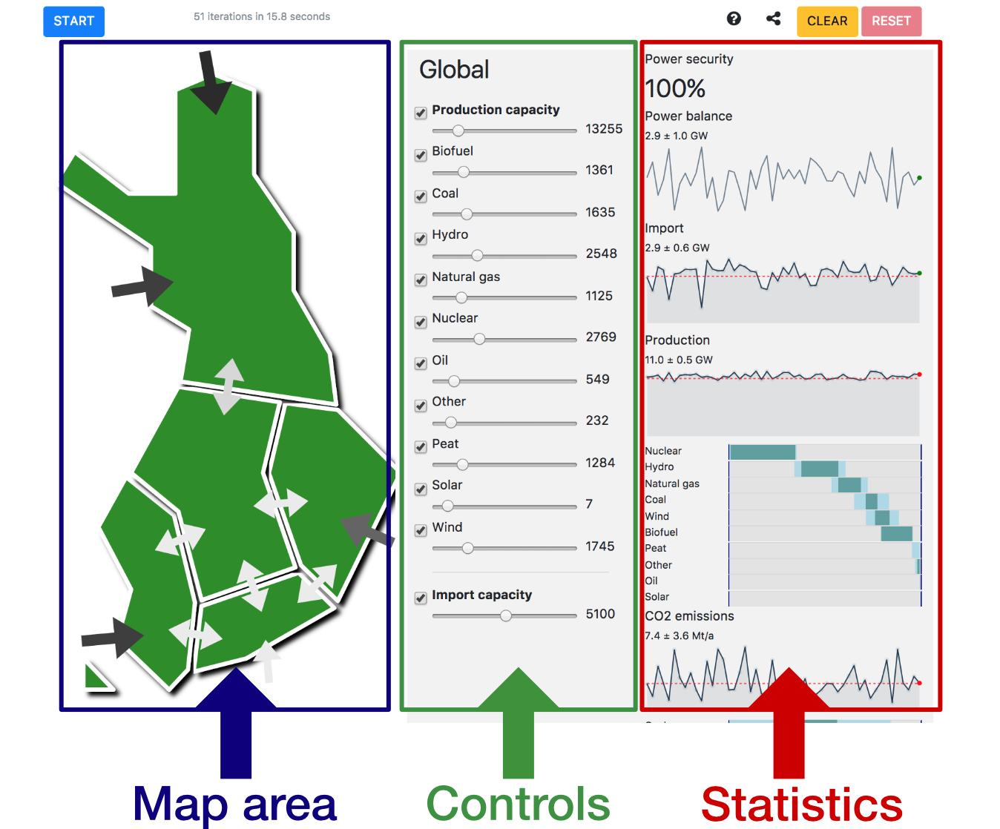

Welcome to the Finnish electricity market simulator!
In short, this is a sandbox simulation (or a game where you get to set your own goals) of Finland's electricity market based on real electricity demand and production information of about 2016 and 2017. While the model of the market, and the simulation using it are simplified, they are realistic enough to show the generic outcomes of various changes that can be applied.
The really short guide is: 1) close this help test by clicking on the CLOSE button below (come back here by clicking on the icon), 2) click on START button (top left corner), 3) twiddle with sliders. Try clicking also on the map and things in it!
The screen is divided into three main areas: the map, controls and statistics. The map is pretty straightforward. You can click on it to select areas, transmission lines and re-clicking on the area or line will deselect it.
Controls can be used to manage production capacities either over the whole Finland, or within a single area. Below is an example of a control for manipulating hydropower capacity. The checkbox either enables or disables the production category, and you can use the slider to control the nominal capacity in megawatts (MW).
Once you have started a simulation, the statistics area shows all kinds of pretty graphs. Please note that since this is a stateless monte carlo simulation, the vertical axis is the simulation round and not time dimension.
Remember that you can hover your mouse over most of the elements to get detailed information!
The CLEAR button will clear out the statistics, and the RESET button (clickable only when simulation is stopped) will reset the model back to the default one.
This work is result of the B.Sc. work at Aalto University in 2017, and conducted as part of the AAN-C2008 Research Project course.
You can find more information on this work in in this blog post. Also, the source code can be found at github.com/santtu/energysim.
Copyright Santeri Paavolainen, Finland, 2017. This work is published under the Apache License 2.0.
This work incorporates various third party libraries which are listed below:
These 3rd party libraries can themselves depend on further libraries.